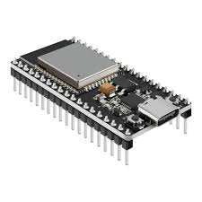
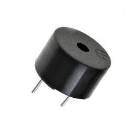
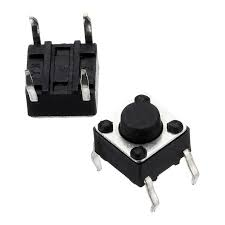
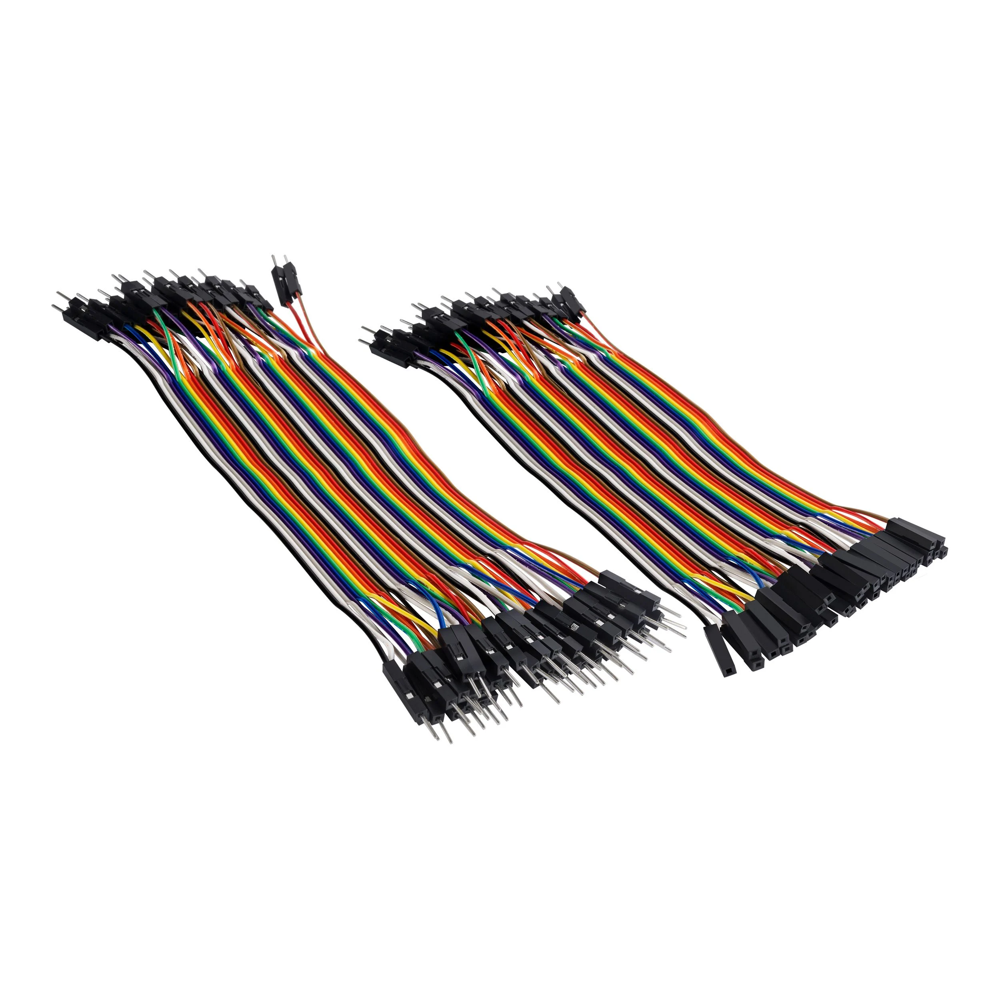
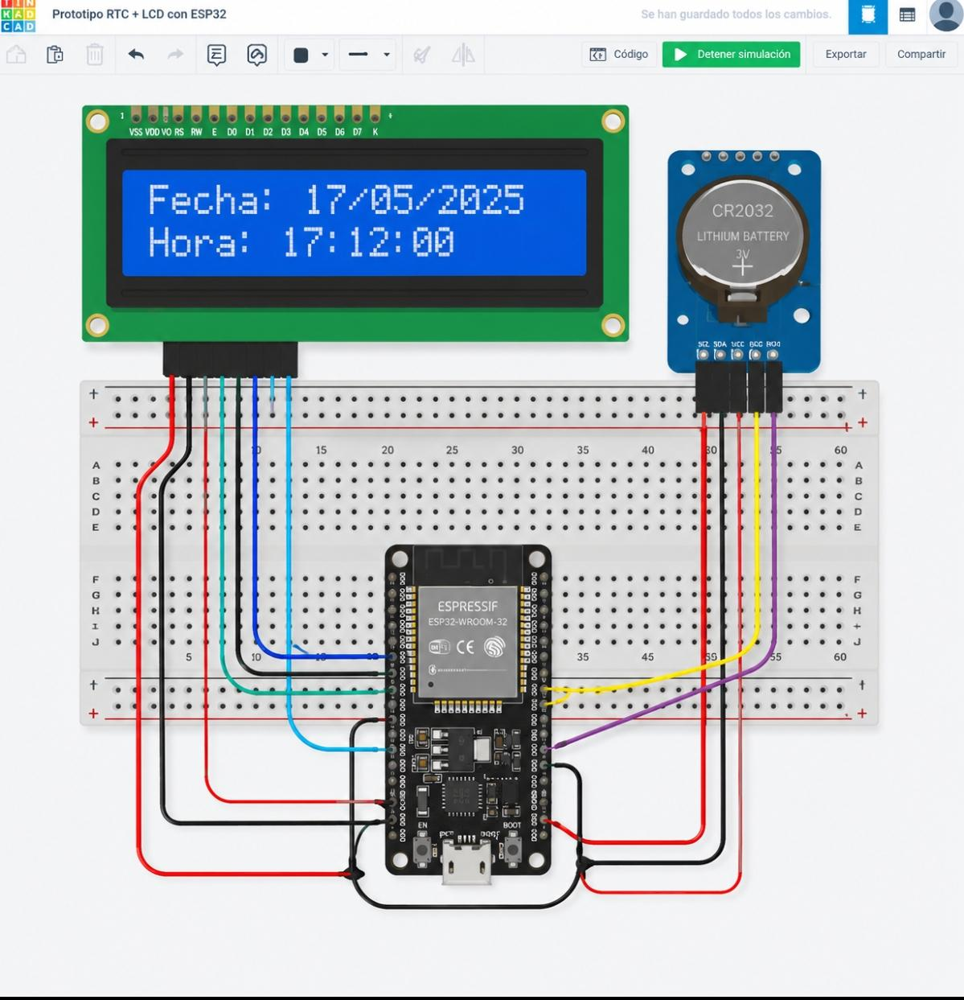

Timbre Inteligente con SP32
Un proyecto de Emprendimiento e Innovación para modernizar los timbres tradicionales usando tecnología accesible.
Ver proyectoDescripción del Proyecto
Este proyecto consiste en el diseño y programación de un timbre electrónico controlado por Arduino Uno. Al presionar un pulsador, el sistema activa un buzzer que emite un sonido configurable. El objetivo es aprender sobre entradas digitales, salidas de audio y programación básica en Arduino.
Materiales y Componentes
sp32
Microcontrolador principal que procesa la señal del botón y activa el buzzer.

Buzzer
Componente que emite el sonido al recibir voltaje desde SP32.

Pulsador
Botón que actúa como interruptor para activar el timbre.

dupont
Cables de 10kΩ para el pulsador y proteger el circuito.

¿Cómo funciona?
- Entrada: Al presionar el pulsador, se envía una señal HIGH al pin digital 2 de SP32.
- Procesamiento: SP32 detecta el cambio y ejecuta la función tone().
- Salida: El buzzer conectado al pin 8 emite un sonido de 1000Hz durante 0.5 segundos.

Código Fuente - Alarma Escolar
#include <Wire.h>
#include <LiquidCrystal_I2C.h>
LiquidCrystal_I2C lcd(0x27, 16, 2);
const int buzzer = 4;
unsigned long tiempoInicio;
bool alarma1 = false;
bool alarma2 = false;
void setup() {
Wire.begin(21, 22); // SDA=21, SCL=22 para ESP32
pinMode(buzzer, OUTPUT);
lcd.init();
lcd.backlight();
lcd.print("Alarma escolar");
tiempoInicio = millis();
}
void loop() {
unsigned long segundos = (millis() - tiempoInicio) / 1000;
// Primera alarma: 10 segundos
if (segundos >= 10 && !alarma1) {
alarma1 = true;
lcd.clear();
lcd.print("Primer Alarma");
tone(buzzer, 3000);
delay(1000);
noTone(buzzer);
}
// Segunda alarma: 20 segundos
if (segundos >= 20 && !alarma2) {
alarma2 = true;
lcd.clear();
lcd.print("Segunda Alarma");
for (int i = 0; i < 2; i++) {
tone(buzzer, 1000);
delay(500);
noTone(buzzer);
delay(500);
}
}
delay(100);
}